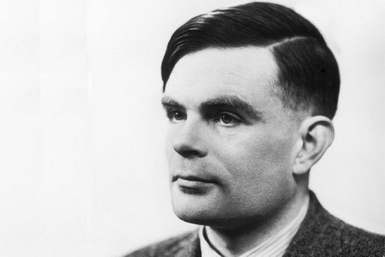
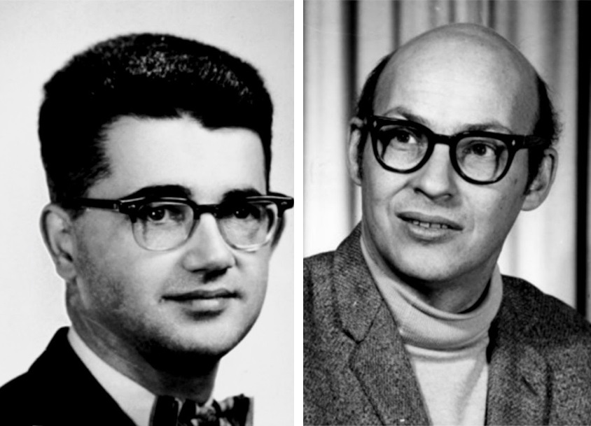
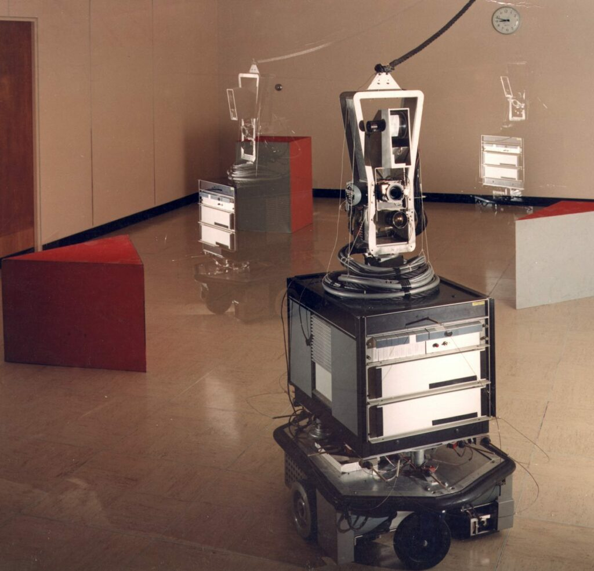
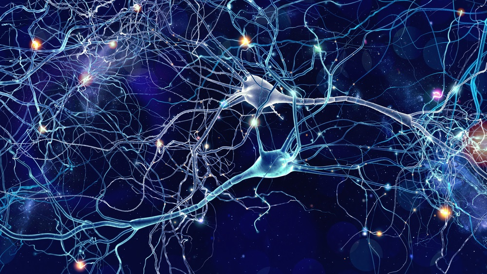
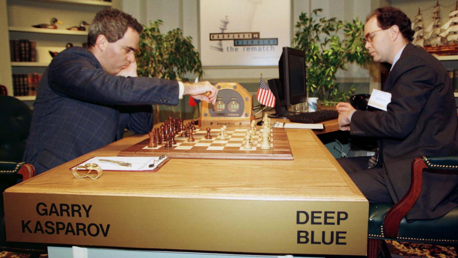
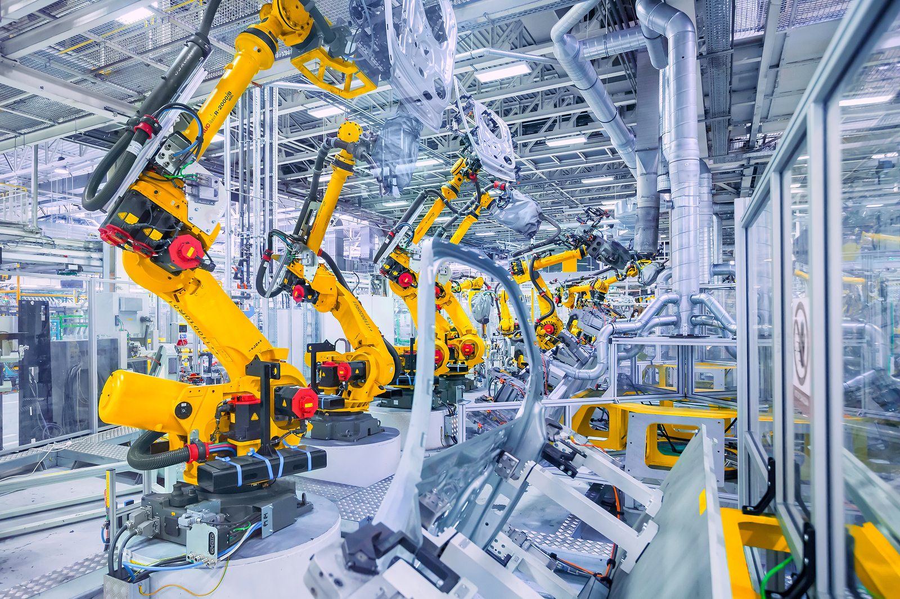

<!DOCTYPE html>
<html lang="hu">
<head>
  
  <meta name="viewport" content="width=device-width, initial-scale=1.0">
  <meta http-equiv="X-UA-Compatible" content="ie=edge">
  <meta charset="UTF-8">
  <link rel="stylesheet" href="bootstrap.min.css">

</body>
<title>A mesterséges intelligencia története</title>
</html>

</head>
<body>
  <div class="container">
    <header class="row">
      <h1>az m.i. története</h1>
    </header>
    <main>
      <section class="row">  
        <div>
          <h2>40-es évek</h2>
          <p>A mesterséges intelligencia fejlődése az 1940-es években kezdődött, amikor Alan Turing megalapozta a számítógépes tudományokat és kifejlesztette a Turing-gépet, amelynek célja a matematikai problémák megoldása volt.</p>
          <p>A Turing-gép az alapja a modern számítógépeknek, és az algoritmusok fejlesztésének is alapja. Az algoritmusok segítségével a számítógépek képesek különböző feladatok végrehajtására, például a művészetben, az orvostudományban és a gazdasági életben.</p>
          <figure>
            
            <figcaption>Alan Turing</figcaption>
          </figure>
        </div>
        <div>
          <h2>50-es évek</h2>
          <p>A 50-es években kezdődött el a mesterséges intelligencia gyakorlati alkalmazása is. Marvin Minsky és John McCarthy megalapították az AI laboratóriumot, amelynek célja az volt, hogy olyan programokat fejlesszenek, amelyek képesek az emberi gondolkodásra és viselkedésre.</p>
          <p>Az AI laboratórium által kifejlesztett első programok közé tartozott az úgynevezett "Logic Theorist", amely képes volt bizonyos matematikai problémákat megoldani. Ezt követte az "General Problem Solver", amely általános problémamegoldó algoritmusokat tartalmazott.</p>
          <figure>
            
            <figcaption>Marvin Minsky és John McCarthy</figcaption>
          </figure>
        </div>
      </section>
      <section class="row">  
        <div>
          <h2>60-as évek</h2>
          <p>A 60-as években kezdődött el a mesterséges intelligencia kutatásának kritikus vizsgálata. A szakemberek felismerték, hogy a korábbiakban kifejlesztett programok korlátozottak voltak, és csak bizonyos típusú feladatokra voltak képesek.</p>
          <p>Az 1969-ben kifejlesztett "Shakey" robot volt az első olyan robot, amely képes volt navigálni egy szobában és felismerni a tárgyakat. Az akkori szakemberek úgy gondolták, hogy a mesterséges intelligencia fejlesztéséhez szükséges az emberi agy működésének jobb megértése.</p>
          <figure>
            
            <figcaption>Shakey robot</figcaption>
          </figure>
        </div>
        <div>
          <h2>70-es évek</h2>
          <p>A 70-es években az AI kutatásának középpontjában az "expert rendszerek" álltak, amelyek az adott szakterületen jártas szakértők tudását és tapasztalatait vették figyelembe. Az ilyen rendszerekhez szükséges tudást adatbázisokból nyerték ki, és az általuk nyújtott információkat az üzleti és ipari területen hasznosították.</p>
          <p>A 70-es években kezdődött el a "természetes nyelvfeldolgozás" fejlesztése is, amely lehetővé tette az emberi beszéd és írás megértését a számítógépek számára. Az ilyen rendszerek azóta is fejlesztés alatt állnak, és az AI területén egyik legfontosabb kutatási területnek számítanak.</p>
        </div>
      </section>
      <section class="row">
        <div>
          <h2>80-as évek</h2>
          <p>Az 1980-as években a szakértői rendszerek mellett a neurális hálózatokra helyeződött a hangsúly, amelyek a biológiai agy működését igyekeztek utánozni. Az ilyen hálózatok az adatok feldolgozását és elemzését végzik az "oktatás" során, azaz a tanulás folyamatában.</p>
          <p>A neurális hálózatok alapjai a biológiai agy működésének tanulmányozásából származnak, és ma már számos területen alkalmazzák, például az adatelemzésben, a képfelismerésben és a beszédfelismerésben.</p>
          <figure>
            
            <figcaption>Neurális hálózat</figcaption>
          </figure>
        </div>
        <div>
          <h2>90-es évek</h2>
          <p>Az 1990-es években az AI kutatásának fókusza a "gépi tanulás" területére helyeződött. Az ilyen rendszerek képesek felismerni a mintákat a nagy mennyiségű adatokban, és ezáltal javítják a döntéshozatali folyamatokat.</p>
          <p>Az 1997-ben tartott "Deep Blue" és az 1998-ban tartott "RoboCup" versenyeken az első olyan mesterséges intelligencia programok mutatták be a nagyközönségnek, amelyek képesek voltak a játékban győzni az emberi ellenfelekkel szemben.</p>
          <figure>
            
            <figcaption>Garry Kasparov és a Deep Blue</figcaption>
          </figure>
        </div>
      </section>
      <section class="row">
        <div>
          <h2>2000-es évek</h2>
          <p>Az 2000-es években az AI területén az "intelligens robotika" fejlődése kezdődött el. A robotok képesek voltak az emberi munkát helyettesíteni bizonyos ipari és katonai területeken, és javították a termelékenységet és a hatékonyságot.</p>
          <p>A 2000-es években megjelentek az első "intelligens személyi asszisztensek" is, amelyek képesek voltak az emberi beszéd és írás felismerésére, valamint az értelmezésre. Az ilyen asszisztensek ma már széles körben elterjedtek, és számos mobilalkalmazásban, okosórákban és intelligens hangszórókban megtalálhatók.</p>
          <figure>
            
            <figcaption>Gyártósori automatizált robotok</figcaption>
          </figure>
        </div>
        <div>
          <h2>2010-es évek</h2>
          <p>Az 2010-es években az AI területén a gépi tanulás és az intelligens robotika fejlődése folytatódott, és megjelentek az első önvezető autók és drónok is. Az AI alkalmazása tovább bővült az orvostudományban, ahol az adatok elemzése és az eszközök diagnosztikája segítette az orvosok munkáját. Az AI alkalmazásai a zenei és irodalmi területen is megjelentek, például az autonóm szöveggenerálás és a zenék előállítása területén.</p>
          <figure>
            
            <figcaption>Önvezetés</figcaption>
          </figure>
        </div>
      </section>
      <section class="row">
        <div>
          <h2>Napjainkban</h2>
        </div>
      </section>
      <section class="row">
        
      </section>
    </main>
    <footer class="row">
      <div>
        
        <p style="font-size: small;">Az oldalon található adatok forrásának hitelessége nem lett ellenőrizve, annak tartalmát ennek megfelelően kezelje.</p>
      </div>
    </footer>
  </div>
</body>
</html>
